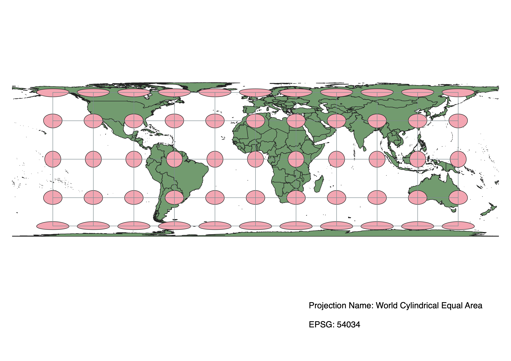

In this project I learned how to display images in different projections!
Caroline Brogden
After (downloading and) uploading the natural earth data as a vector layer to a new project in QGIS, I then ran the Indicatrix mapper, a plug-in downloaded before I began the assignment. I picked contrasting colors for the layer elements via editing symbology.In map view, I changed the map projection EPSGs by selecting different options under Project Properties, and then Preferred Coordinate Reference System.
WGS84 Projection
Some observations

Aitoff Projection
Some observations

Pseuo Mercator
Some observations
Sphere Winkel 1
Some observations
World Cylindrical Equal Area
Some observations

World Equidistant Conic
Some observations
North Pole Azimuthal Equidistant
Some observations

NAD 1927 State Plane Hawaii 1 FIPS 5101
Some observations
World Azimuthal Equidistant
Some observations
Data used for this project
Download Natrual Earth 1:10m Cultural Vector